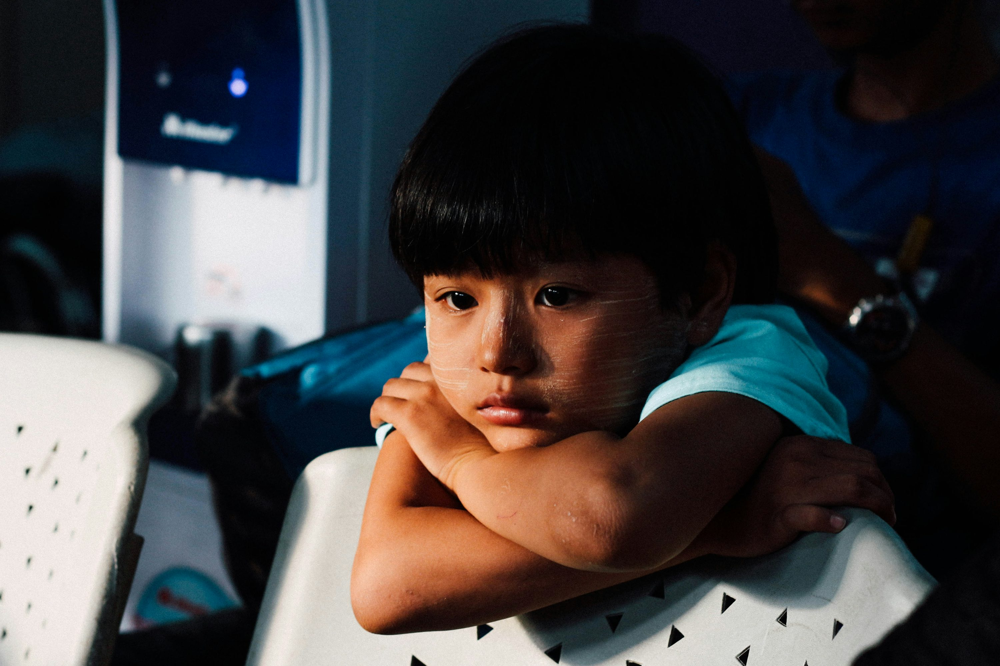

Ruh sağlığına dair
güncel bilgiler ve içgörüler.

Kaygıyla Başa Çıkmak: Zihinsel Fırtınayı Yönetme Sanatı
Kaygı (anksiyete), yaşamın doğal bir parçası ve beynimizin bizi potansiyel tehlikelere
karşı uyarma şeklidir. Ancak bu alarm sistemi sürekli 'açık' kaldığında, günlük
yaşamımızı, işlevselliğimizi ve mutluluğumuzu ciddi şekilde etkileyebilir. Kaygıyla başa
çıkmak, onu yok etmeye çalışmak değil, onu anlamak ve yönetmeyi öğrenmektir.
Devamını Oku

İlişkilerde Sağlıklı Sınırlar Koymak
Sağlıklı sınırlar, ilişkilerde nerede "ben"in bittiği ve "sen"in başladığını belirleyen
görünmez çizgilerdir. Bu sınırlar, duvarlar örmek değil, karşılıklı saygı ve anlayışa
dayalı, sürdürülebilir bir bağ kurmak için gereklidir. Kendi ihtiyaçlarımızı,
duygularımızı ve değerlerimizi korumak, hem bireysel mutluluğumuz hem de ilişkinin
sağlığı için atılacak en önemli adımdır.
Devamını Oku

Çocuklarda ve Ergenlerde Kayıp ve Yas Süreci
Kayıp ve ölüm, yaşamın doğal ancak en zorlayıcı gerçeklerinden biridir. Özellikle
çocuklar için bu deneyim, gelişimsel düzeyleri gereği hem duygusal hem bilişsel açıdan
karmaşık bir süreçtir. Çocuğun sevdiği birini kaybetmesi, güven duygusunu sarsabilir ve
dünyanın artık eskisi kadar güvenli bir yer olmadığı hissini doğurabilir. Bu noktada,
çocuğun yas süreci; onun duygularını tanıması, anlamlandırması ve yeniden denge
kurabilmesi için kritik bir döneme dönüşür.
Devamını Oku